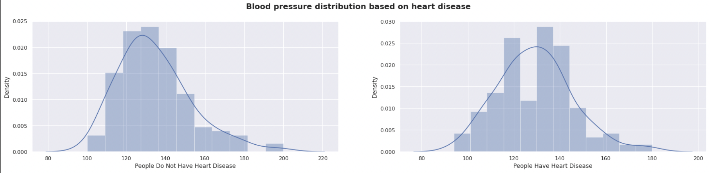

Analysis Machine Learning model Results Based on Datasets Available
Model's accuracy is 90.16 +- 0.5%. The following are the results of analysis done on the available heart disease dataset. Each graph shows the result based on different attributes.


